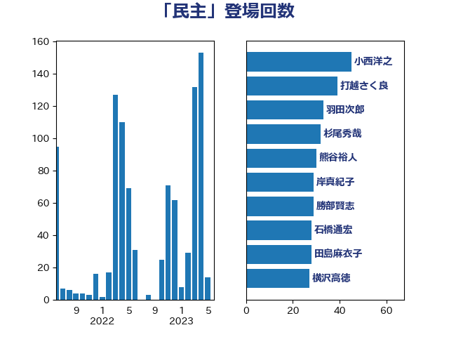

単語「民主」

| 小西洋之 | 立憲民主党 | 45 回 |
| 打越さく良 | 立憲民主党 | 39 回 |
| 羽田次郎 | 立憲民主党 | 33 回 |
| 杉尾秀哉 | 立憲民主党 | 32 回 |
| 熊谷裕人 | 立憲民主党 | 30 回 |
| 岸真紀子 | 立憲民主党 | 29 回 |
| 勝部賢志 | 立憲民主党 | 29 回 |
| 石橋通宏 | 立憲民主党 | 28 回 |
| 田島麻衣子 | 立憲民主党 | 28 回 |
| 横沢高徳 | 立憲民主党 | 27 回 |
| 塩村あやか | 立憲民主党 | 27 回 |
| 石川大我 | 立憲民主党 | 26 回 |
| 牧山ひろえ | 立憲民主党 | 26 回 |
| 末松信介 | 自由民主党 | 19 回 |
| 小沢雅仁 | 立憲民主党 | 19 回 |
| 福岡資麿 | 自由民主党 | 18 回 |
| 吉田宣弘 | 公明党 | 18 回 |
| 森屋隆 | 立憲民主党 | 17 回 |
| 山本順三 | 自由民主党 | 17 回 |
| 石井準一 | 自由民主党 | 16 回 |
| 徳永エリ | 立憲民主党 | 16 回 |
| 石垣のりこ | 立憲民主党 | 15 回 |
| 村田享子 | 立憲民主党 | 14 回 |
| 川田龍平 | 立憲民主党 | 13 回 |
| 三上えり | 立憲民主党 | 13 回 |
| 田名部匡代 | 立憲民主党 | 12 回 |
| 水野素子 | 立憲民主党 | 12 回 |
| 古賀之士 | 立憲民主党 | 12 回 |
| 柴愼一 | 立憲民主党 | 10 回 |
| 小沼巧 | 立憲民主党 | 9 回 |
| 古賀千景 | 立憲民主党 | 9 回 |
| 青木愛 | 立憲民主党 | 7 回 |
| 辻元清美 | 立憲民主党 | 7 回 |
| 水岡俊一 | 立憲民主党 | 7 回 |
| 森本真治 | 立憲民主党 | 7 回 |
| 井上哲士 | 日本共産党 | 7 回 |
| 鬼木誠 | 立憲民主党 | 6 回 |
| 芳賀道也 | 国民民主党 | 6 回 |
| 林芳正 | 自由民主党 | 6 回 |
| 斎藤嘉隆 | 立憲民主党 | 6 回 |
| 野田国義 | 立憲民主党 | 5 回 |
| 柴田巧 | 日本維新の会 | 5 回 |
| 市村浩一郎 | 日本維新の会 | 5 回 |
| 岸田文雄 | 自由民主党 | 5 回 |
| 黄川田仁志 | 自由民主党 | 4 回 |
| 谷田川元 | 立憲民主党 | 4 回 |
| 福島みずほ | 社会民主党 | 4 回 |
| 礒崎哲史 | 国民民主党 | 4 回 |
| 田村智子 | 日本共産党 | 4 回 |
| 沢田良 | 日本維新の会 | 4 回 |
| 徳永久志 | 立憲民主党 | 4 回 |
| 山東昭子 | 自由民主党 | 4 回 |
| 高木真理 | 立憲民主党 | 3 回 |
| 馬場伸幸 | 日本維新の会 | 3 回 |
| 牧野たかお | 自由民主党 | 3 回 |
| 浜田聡 | NHK党 | 3 回 |
| 山添拓 | 日本共産党 | 3 回 |
| 山下貴司 | 自由民主党 | 3 回 |
| 伊東信久 | 日本維新の会 | 3 回 |
| 音喜多駿 | 日本維新の会 | 2 回 |
| 青島健太 | 日本維新の会 | 2 回 |
| 階猛 | 立憲民主党 | 2 回 |
| 阿部知子 | 立憲民主党 | 2 回 |
| 長谷川淳二 | 自由民主党 | 2 回 |
| 長浜博行 | 無所属 | 2 回 |
| 鈴木宗男 | 日本維新の会 | 2 回 |
| 笠井亮 | 日本共産党 | 2 回 |
| 福山哲郎 | 立憲民主党 | 2 回 |
| 滝波宏文 | 自由民主党 | 2 回 |
| 櫛渕万里 | れいわ新選組 | 2 回 |
| 枝野幸男 | 立憲民主党 | 2 回 |
| 新藤義孝 | 自由民主党 | 2 回 |
| 尾辻秀久 | 無所属 | 2 回 |
| 宮口治子 | 立憲民主党 | 2 回 |
| 嘉田由紀子 | 無所属 | 2 回 |
| 北神圭朗 | 無所属 | 2 回 |
| 上田清司 | 国民民主党 | 2 回 |
| 青柳仁士 | 日本維新の会 | 1 回 |
| 青木一彦 | 自由民主党 | 1 回 |
| 酒井庸行 | 自由民主党 | 1 回 |
| 道下大樹 | 立憲民主党 | 1 回 |
| 近藤和也 | 立憲民主党 | 1 回 |
| 豊田俊郎 | 自由民主党 | 1 回 |
| 谷公一 | 自由民主党 | 1 回 |
| 西村康稔 | 自由民主党 | 1 回 |
| 藤岡隆雄 | 立憲民主党 | 1 回 |
| 船田元 | 自由民主党 | 1 回 |
| 舞立昇治 | 自由民主党 | 1 回 |
| 紙智子 | 日本共産党 | 1 回 |
| 福田昭夫 | 立憲民主党 | 1 回 |
| 石井浩郎 | 自由民主党 | 1 回 |
| 矢倉克夫 | 公明党 | 1 回 |
| 清水真人 | 自由民主党 | 1 回 |
| 浜田靖一 | 自由民主党 | 1 回 |
| 河野義博 | 公明党 | 1 回 |
| 櫻井周 | 立憲民主党 | 1 回 |
| 森山浩行 | 立憲民主党 | 1 回 |
| 森屋宏 | 自由民主党 | 1 回 |
| 梶原大介 | 自由民主党 | 1 回 |
| 柿沢未途 | 無所属 | 1 回 |
| 柚木道義 | 立憲民主党 | 1 回 |
| 松沢成文 | 日本維新の会 | 1 回 |
| 松下新平 | 自由民主党 | 1 回 |
| 杉本和巳 | 日本維新の会 | 1 回 |
| 本村伸子 | 日本共産党 | 1 回 |
| 有村治子 | 自由民主党 | 1 回 |
| 平木大作 | 公明党 | 1 回 |
| 平口洋 | 自由民主党 | 1 回 |
| 岩谷良平 | 日本維新の会 | 1 回 |
| 岩渕友 | 日本共産党 | 1 回 |
| 山田宏 | 自由民主党 | 1 回 |
| 山岸一生 | 立憲民主党 | 1 回 |
| 小野泰輔 | 日本維新の会 | 1 回 |
| 小野寺五典 | 自由民主党 | 1 回 |
| 小林一大 | 自由民主党 | 1 回 |
| 宮沢洋一 | 自由民主党 | 1 回 |
| 宮本徹 | 日本共産党 | 1 回 |
| 大西健介 | 立憲民主党 | 1 回 |
| 大石あきこ | れいわ新選組 | 1 回 |
| 塩川鉄也 | 日本共産党 | 1 回 |
| 城井崇 | 立憲民主党 | 1 回 |
| 和田有一朗 | 日本維新の会 | 1 回 |
| 吉良州司 | 無所属 | 1 回 |
| 吉田久美子 | 公明党 | 1 回 |
| 吉川沙織 | 立憲民主党 | 1 回 |
| 吉川元 | 立憲民主党 | 1 回 |
| 原口一博 | 立憲民主党 | 1 回 |
| 中島克仁 | 立憲民主党 | 1 回 |